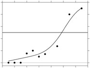

|  |
Model-free estimation of a psychometric function |
|---|---|
| Home | Downloads | Demonstration | Documentation | Examples | Functions | Contacts |
|---|
Data for the following examples can be found here.
Example 1. Frequency of seeing
A flash of light of variable intensity was presented repeatedly at a fixed location in the visual field of a subject who reported whether the flash was visible. There were 3–20 trials at each stimulus level.Example 2. Visual detection of path deviation
A subject was presented with the image of a dot moving rightwards on a linear path until it reached the midline of the display, when it changed direction either upwards or downwards. The subject had to indicate the direction. The symbols in the figure show the proportion of correct responses in 30 trials as the deviation varied from –3 to 3 units.Example 3. Discrimination of pitch
A subject had to identify which interval out of three contained a tone whose fundamental frequency was different from that in the other two intervals. The difference in fundamental frequency of the tones varied and there were 3–49 trials at each frequency difference.Example 4. Discrimination of "porthole" views of natural scenes
A subject was presented with a display split into two parts, one containing a pair of patches from the same image, the other a pair from different images, and the subject had to judge which pair came from the same image. There were 200 trials at each separation of the patches.Example 5. Induction of a visual motion aftereffect
A subject was presented with a moving adaptation stimulus, followed by a test stimulus. The subject had to indicate whether the motion of the test stimulus was in the same direction as the adapting stimulus, either up or down, as a function of relative modulation depth. There were 10 trials at each modulation depth.Example 6. Discrimination of image approximations
A subject was shown an image of a natural scene and an approximation of this image based on principal component analysis. The task was to distinguish between the images with different number of components in the approximation. There were 200 trials for each number of components pooled over a range of natural scenes.Example 7. Auditory detection of a gap in noise
A subject had to detect a gap of variable duration in a noise burst of 300 ms presented to one ear. There were 12 trials with each gap of 2–8 ms and 84 trials with no gap.